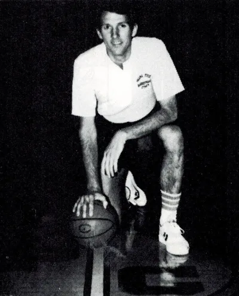

By: Smayan Srikanth
Gregg Popovich Day
That’s what January 28th should be, every single year.
Thanks for reading Sports Square! Subscribe for free to receive new posts and support my work.
The Popovich story began on that date in 1949, in bustling East Chicago, Indiana, home to the Indiana Harbor and the Ship Canal. He was born to a Serbian father and a Croatian mother, graduating from Merrillville High School in 1966.
He then attended the United States Air Force Academy, playing on the academy’s Air Force Falcons basketball team. In his senior year, he even became the team captain and was the leading scorer that year. He graduated in 1970 and considered a career with the CIA.
Pops then served in the US Air Force. During this time, he continued playing with the US Armed Forces basketball team, becoming captain and winning the AAU championship. He was then invited to the 1972 US Olympic Trials — but was cut from the team.
Popovich began his coaching career as an assistant coach to Hank Egan at the Air Force Academy. During this time, he earned a master’s degree in physical education and sports sciences from the University of Denver.
He worked there for 6 years (1973–1979), before moving to the Pomona-Pitzer Sagehens in Claremont, California — a small DIII program. According to Popovich, he didn’t know the program was in rough shape. In 1980, he was just another coach trying to figure it out.
“It was a horrendous beginning,” Popovich recalled, “But be that as it may, I still fell in love with it.”
Popovich with Pomona-Pitzer. Courtesy: Peter Osgood.
That first year, the Hens lost to Caltech, breaking their 99-game conference losing streak. But Popovich kept going, sending thousands of recruiting letters nationwide. His assistant Charles Katsiaficas recalled the grind:
“A lot of letter-writing, a lot of follow-up calls...you really had to work very hard at generating a recruiting list.”
Five seasons after a 2-22 season, the Sagehens were SCIAC champions. They lost in the first round, but they won the conference.
Popovich volunteered under Larry Brown at Kansas, then returned to Pomona. By 1988, he joined Brown in the NBA as a Spurs assistant, until 1992. He later served under Don Nelson at the Warriors, which Pop said helped him grow immensely.
He returned to San Antonio in 1994 as GM, signing Avery Johnson and trading Dennis Rodman. After a rough 3-15 start in 1996, Popovich fired head coach Bob Hill and took over himself on December 10.
That poor season earned the Spurs the #1 draft pick, selecting Tim Duncan — changing the franchise forever.
With David Robinson and Tim Duncan, Popovich led the Spurs to 56 wins in 1997–98 and their first NBA title in 1999. Over the next 20 years, he would win five championships (1999, 2003, 2005, 2007, and 2014), and three Coach of the Year awards.
Pop was never afraid to make unpopular decisions — like resting stars and getting fined for it — to protect his players’ longevity. His vision went beyond basketball.
“This is probably the most meaningful of any award I've received... this place molded me from a wise guy to a half decent person.”
– Gregg Popovich on becoming an Air Force Distinguished Graduate
In 2021, Popovich coached Team USA to Olympic Gold. In 2022, he became the all-time regular season wins leader. In 2023, he entered the Basketball Hall of Fame. And on November 2, 2024, Popovich suffered a stroke — his final game as coach was against the Timberwolves.
He stepped down in 2025, ending a 29-year head-coaching reign, but continued as President of Basketball Operations.
From Shaq to Steve Kerr, Pop’s impact is universally respected. He treated every player the same. He stood for discipline, equality, humility, and honesty.
“We used to call it ‘The Program.’ I love that man for a different reason... Pop gave us a couple pairs of shoes. He never wanted anything in return.”
– Shaquille O’Neal
“Pop is one of the most important people in my life... for reasons that go way beyond basketball.”
– Steve Kerr
He held players accountable — even legends like Tim Duncan — and inspired everyone in his orbit. He revolutionized the way coaching is viewed in the NBA.
I didn’t expect to publish this article so soon — maybe in 2028. But Pops deserves this. Forever.
Comments